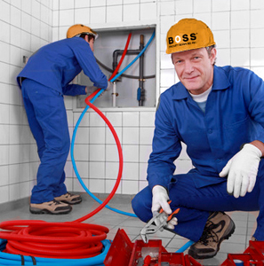

Plumbing
I have worked in the plumbing for 3 years, I started out as an apprentice and worked my way up to a plumbing technician. During my time in the plumbing I provided exceptional customer service, I prioritized making the customer happy with the work I provided. For example I would make sure my workspace was clean after the job was finished. I treated the space as if it was my own home. I would give tips on maintenance so they would not have to deal with plumbing problems if possible. In addition I would inform the customer during the diagnosing stage why the problem occured and how it can be avoided in the future.
As a plumber I found myself working independently many times, I was in charge of the materials needed, problem-solving, providing solution but there were many times I worked with a team. I understood that I needed to help the team get the job finished. I really enjoyed helping homeowners get their problems fixed. It was very satisfying to talk to a customer happy with the work that was performed.
Nurse Assistant
I worked in the healthcare field for 5 years, I was a nursing assistant at a long term healthcare center. I was in charge of taking care of the residents in the center. Many of the residents come to a point where they could not take good care of themselves. I assisted them meeting their daily needs such as hygiene, diet and many other basic needs.
I worked with the healthcare team to help many residents get back to normal daily routine. I coordinated with doctors, nurses and the residents' families to take care of the resident. I enjoyed helping the sick a lot, it brought me a lot of happiness working with the elderly.